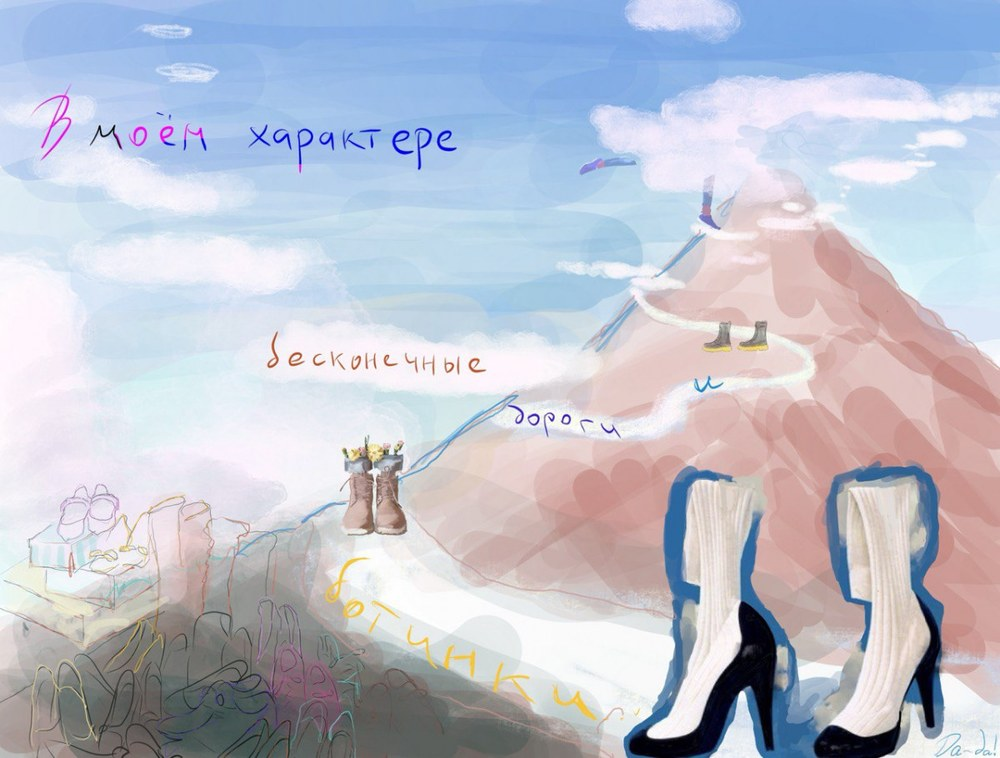

Я люблю начинать сессию с новым клиентом вопросом: «Что вам не хватает для того, чтобы в вашей жизни всё было точно так, как вы хотите?» Самый частый ответ: «Мне не хватает уверенности в себе, у меня низкая самооценка». При этом есть затруднения с пониманием, что такое уверенность и самооценка.
Кристофер Мрук, занимавшийся исследованием самооценки, отмечает: современное общество часто пользуется понятием «самооценка», однако никто не может дать точное и исчерпывающее определение — сколько существует исследователей, столько существует и различных дефиниций.
Я придерживаюсь определения Эда Майлетта: уверенность в себе — это умение сдерживать обещания, данные самому себе.
Почему обещания себе связаны с уверенностью
Связь между выполнением обещаний и уверенностью объясняется через укрепление самоценности (self-worth), самовосприятия и самоэффективности (self-efficacy) — ключевых понятий в психологии.
Ощущение собственной ценности — нечто стержневое, описывающее глубинное отношение человека к своим целям в мире. Самоэффективность — это убеждение человека в своей способности эффективно действовать в той или иной ситуации, вера в успех этих действий. Она сопровождается предпочтением более сложных задач, постановкой достаточно трудных целей и проявлением упорства при их достижении.
70% людей, регулярно выполняющих личные обещания, сообщают о повышении уровня уверенности в себе.
Два шага назад, чтобы увидеть себя
Согласно экзистенциально-аналитической теории личности Альфрида Лэнгле, чтобы стать собой, необходимо увидеть себя и составить достаточно чёткий и понятный образ себя. Последнее возможно при наличии некой дистанции по отношению к собственным чувствам, действиям и решениям — как будто необходимо сделать два шага назад, чтобы увидеть полную картину себя в зеркале.
У многих моих клиентов часто нет никаких идей, как выглядит визуально их самооценка. Например, у меня это термометр, у кого-то ростомер или термостат. И из чего состоит их образ Я — тоже.
Я использую конфронтацию:
- Что, если бы самооценка и уверенность в себе была картиной, — что на ней было бы изображено?
- Как вы можете рассказать о себе, не прибегая к перечислению фактов своей жизни и принадлежности к различным системам: организациям, вузам, клубам, сообществам?
Практика «В моём характере…»
Моё воображение рисует самооценку в виде квеста — набора картинок с короткими историями о себе. Я предлагаю продолжить предложение: «В моём характере…».
Дальше я прошу найти глагол действия, который рассказывает о том, что вы готовы делать со страстью, не замечая времени и не жалея сил. Потом — подумать о качестве или способности, которая свойственна вам на 100%.

Например. В моём характере — искать новые башмаки и дороги. Я коллекционирую сувенирные туфельки, сапоги, башмаки и ботинки (не больше 10 см), их уже несколько сотен, и я никогда не откажусь от командировки — я их обожаю.
📚 Mruk C. Self-Esteem: Research, Theory, and Practice. 2nd ed. N. Y.: Springer, 1999. 240 p.
Кац Д., Карлин Е. Исследование феномена самоценности в психотерапевтическом контексте. Journal of Integrative Psychotherapy and Systemic Analysis.
Лэнгле А. Person. Экзистенциально-аналитическая теория личности. М.: Генезис, 2005.
Майлетт Эд. Не стойте в очереди за успехом. Достичь желаемого за один верный шаг. М.: МИФ. С. 223–226.
Салмина Н. Г., Звонова Е. В., Елизарова Е. Ю. Компоненты представлений о самоэффективности специалиста // Вестник университета. 2021. № 3. С. 177–182.